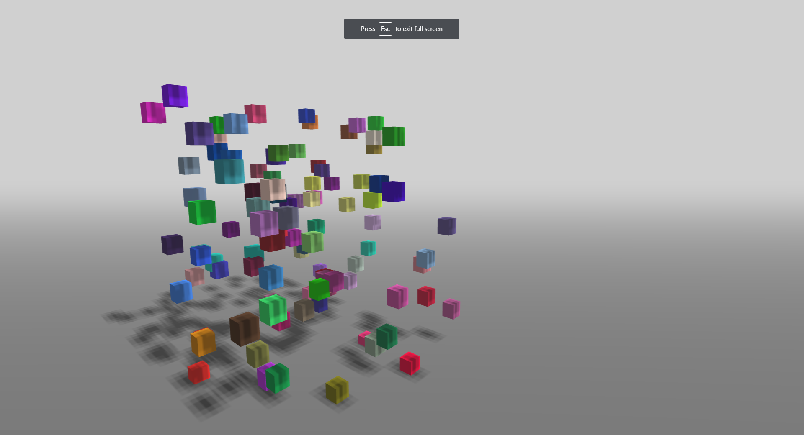
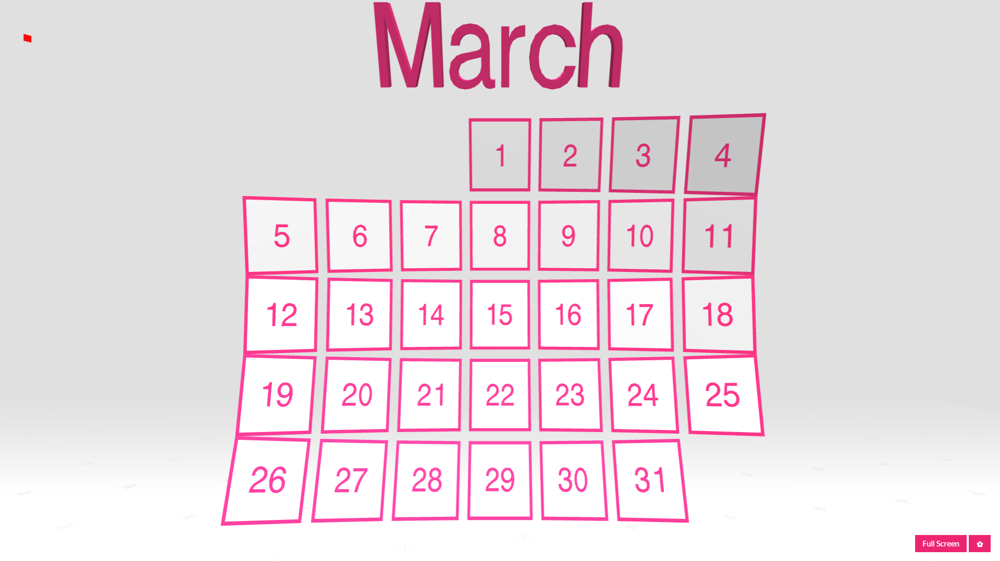
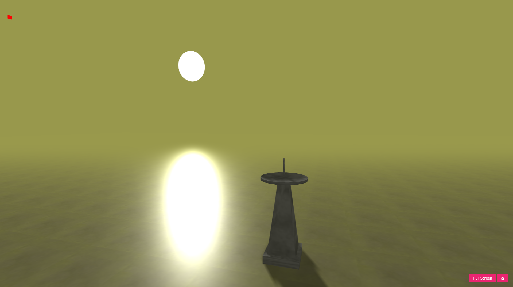
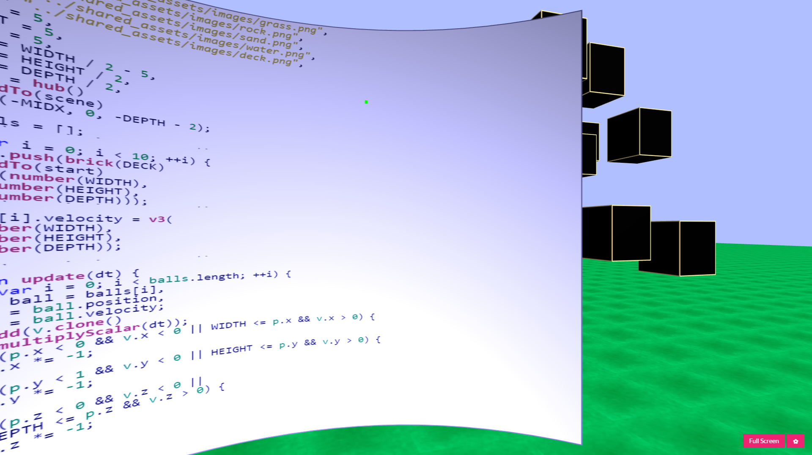
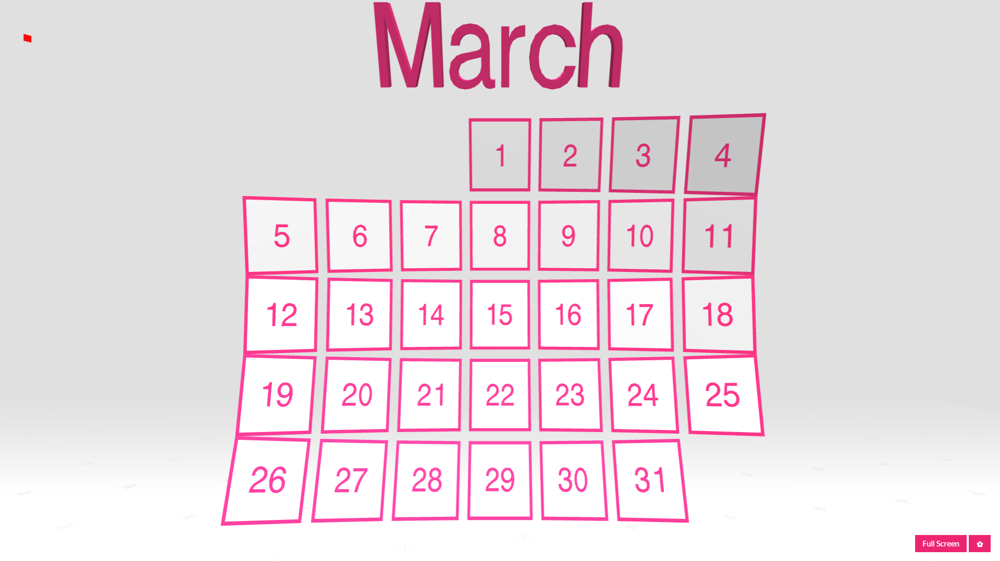
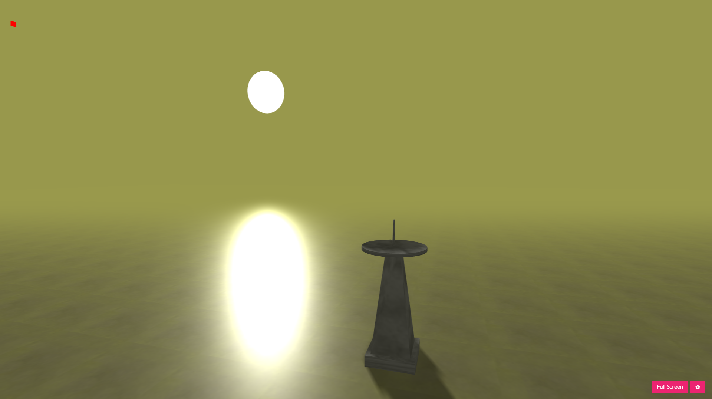
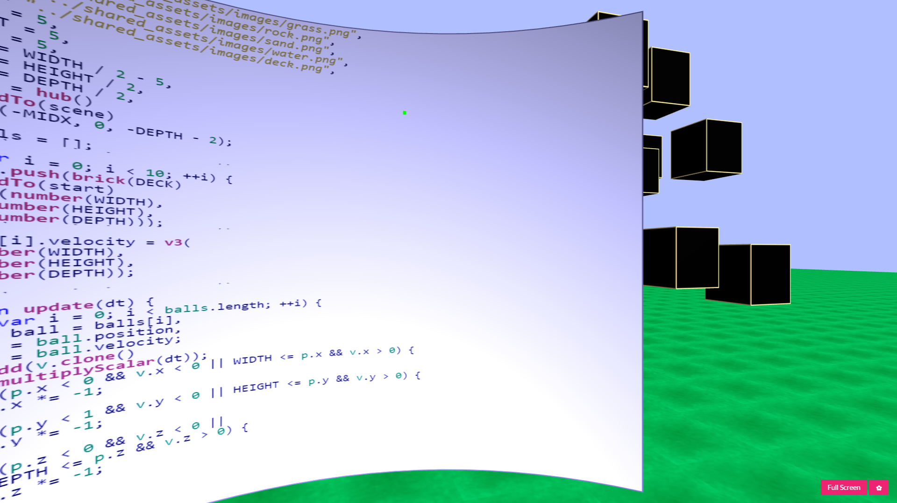

WebVR is an experimental JavaScript API that provides access to Virtual Reality devices, such as the Oculus Rift, HTC Vive, Samsung Gear VR, or Google Cardboard, in your browser.
The Primrose Framework helps web developers create virtual reality experiences within standard web browsers, on desktop and mobile devices alike, using the free, open source web development tools with which they are most familiar

 




